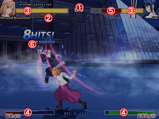

Moving
| Walk | or | Forward or back. |
|---|---|---|
| Jump | Straight up, or toward that side. | |
| Crouch | Low attacks and low guard. | |
| Dash, backstep | or | Tap twice to rush in or hop back. |
| Air dash | orin the air | Dash once in mid-air. |
| Double jump | in the air | Jump again in mid-air. |
| High jump | then | Tap down just before jumping to go higher. |
Defending
| Guard | holdor | Hold away from the attack: standing or crouching. Guarding wears down your Vital Source. |
|---|---|---|
| Shield | D | Press as the attack arrives to stop it without guarding. Shielding fills your Magic Circuit. |
| Shield Counter | after a shieldD | A strong counter-attack; which one depends on whether you stand, crouch or are in the air. Costs a little gauge. |
| Shield Bunker | D | Parries an attack and hits back in one move. Normally free; if it's guarded, it can force through for a little gauge. |
| Aerial Recovery | knocked upABC | Press an attack button (with a direction to choose where) to get control back. If you don't, you're defenseless until you land. |
Attacking
| Throw | closeorC | Grabs the opponent, even one who is guarding. Some characters can also throw in the air. |
|---|---|---|
| Blowback Edge | holdABC | Hold an attack button to charge it. Some characters' charged attacks can't be guarded. |
| Special moves | motionABC | Each character's own; see Characters. |
| EX moves | specialC | A stronger version for 100% of the gauge. With less than 100%, C does the normal (B) version. Not every special has one. |
| Arc Drive | C | Each character's super move, with 300% of the gauge or in Heat. In Blood Heat it becomes a stronger version. |
| Last Arc | Blood HeatDshield | In Blood Heat, after the right shield, each character can unleash their strongest move. |
Gauge and Heat
Magic Circuit, the gauge at the bottom of the screen, goes up to 300%. It fills as you hit your opponent and as you shield their attacks, and it pays for EX moves, Heat and Arc Drives.
Heat (blue aura)
Dwith 100%You get stronger, can use your Arc Drive, and your health slowly comes back. It also starts by itself when the gauge reaches 300%.
Blood Heat (gold aura)
in HeatDStronger still: your Arc Drive becomes its upgraded version, and the Last Arc becomes possible.
Vital Source shrinks as you take hits and as you guard. It doesn't matter most of the time, but in Heat your health recovers more slowly the lower it is, and not at all once it's empty.
Battle screen

- Frame rate. 60 is normal; it says nothing about the fight itself.
- Rounds won. Two wins take the match, unless Options says otherwise.
- Health. At zero you lose the round. Heat brings some of it back.
- Magic Circuit. Your gauge, 0 to 300%.
- Vital Source. How much health Heat can still restore.
- Combo counter. Hits in a row and the damage they did.
Game modes
- Story Mode
- The original MELTY BLOOD story, played with Re·ACT's fighting system.
- Arcade Mode
- A run of fights with a story of its own.
- VS Mode
- Pick both fighters: against the computer, or player 1 against player 2.
- Training Mode
- Practise moves and combos. Pause (Escthe button at the top of the screen) opens its practice menu.
- Options
- Difficulty, damage, rounds to win, background detail, story retries and text speed, and the music and effects volume.
- Exit Game
- Ends the game; Play again starts it once more.
Characters
Each character's special moves and their Arc Drive (the "Triple Gauge Special Move"). The move lists draw the stick motions as curved arrows:
- quarter circle forward
- quarter circle back
- forward, then a Z
- back, then a reversed Z
- down twice
- half circle: Arc Drives
"Attack Button" is any of A, B or C (C for the EX version). Aerial Poss.: can also be done in the air. Chainable: can follow your normal attacks in a combo.